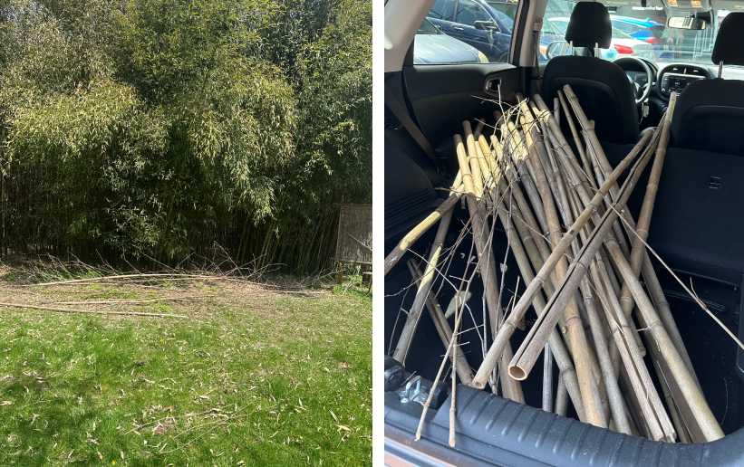
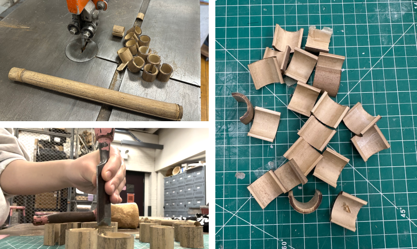
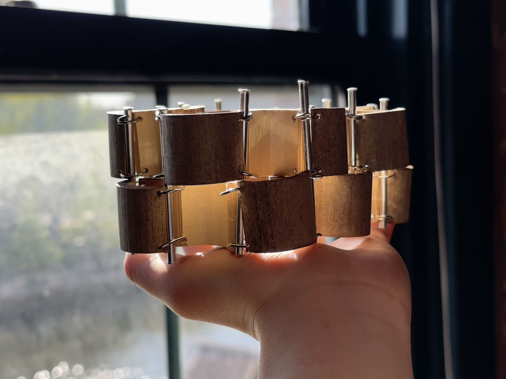
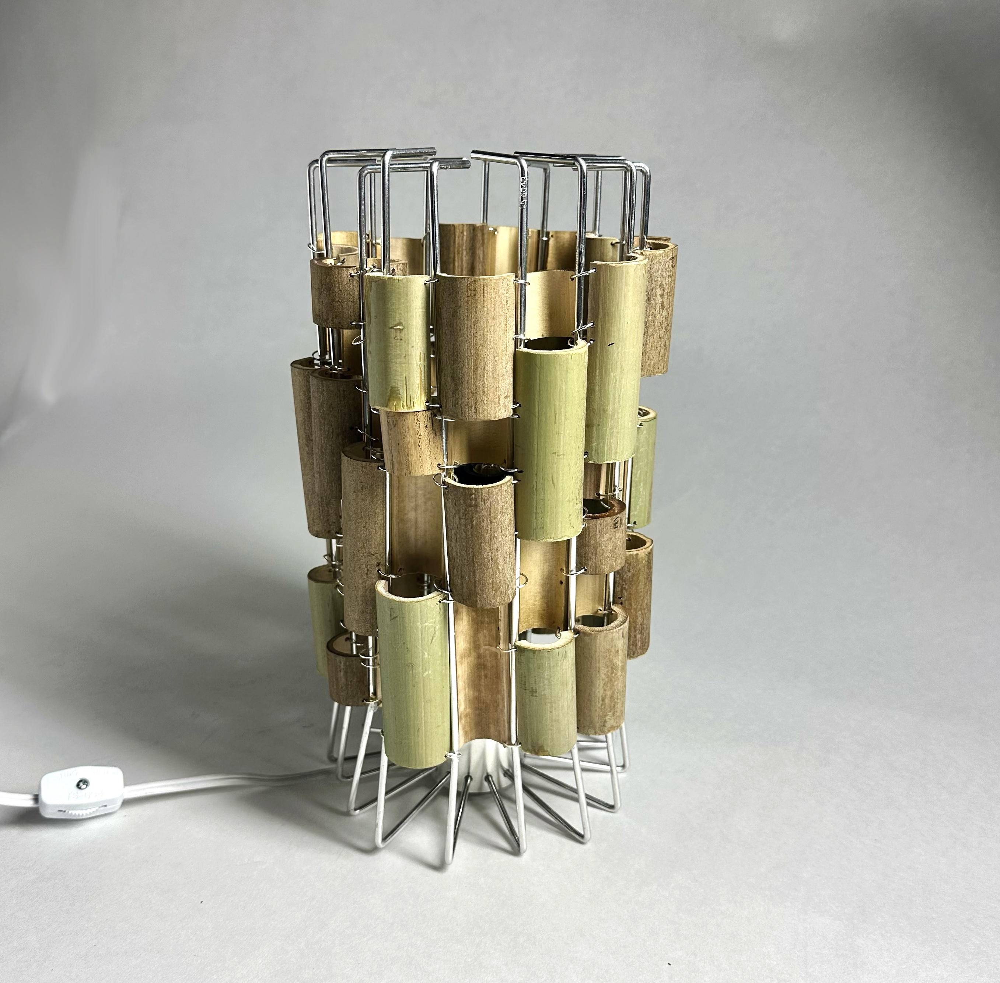
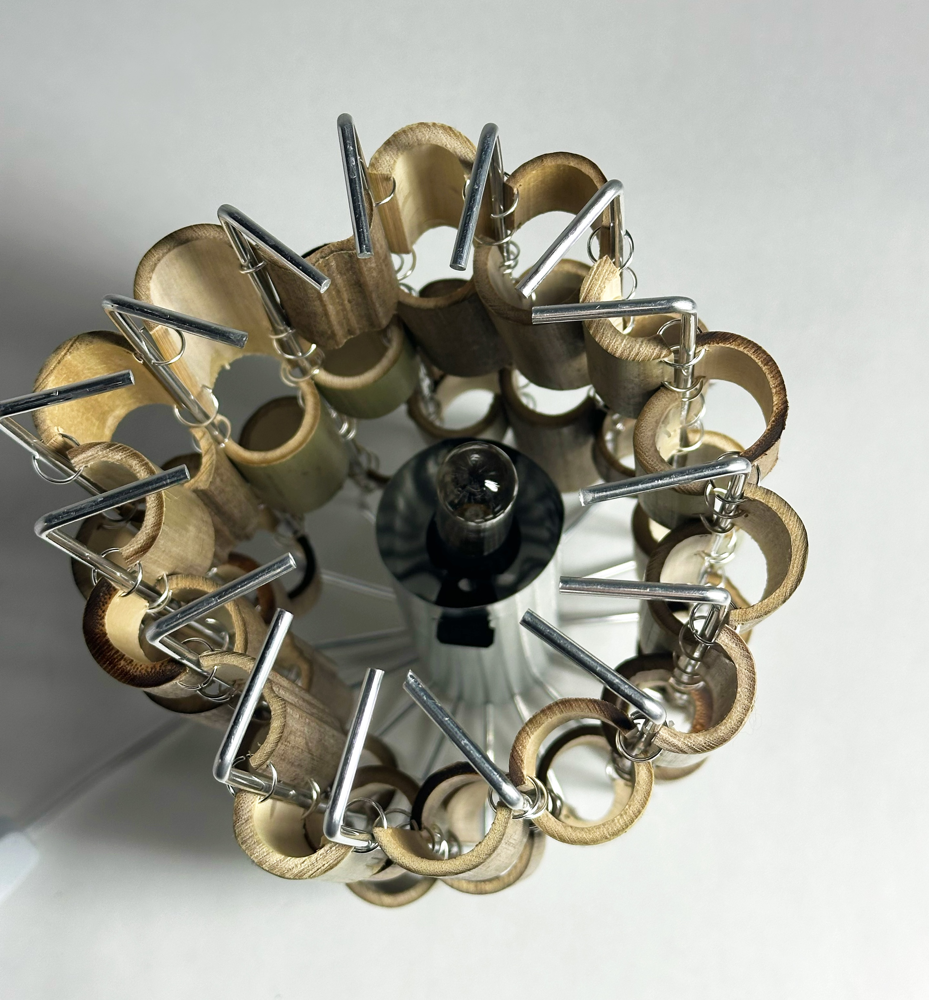
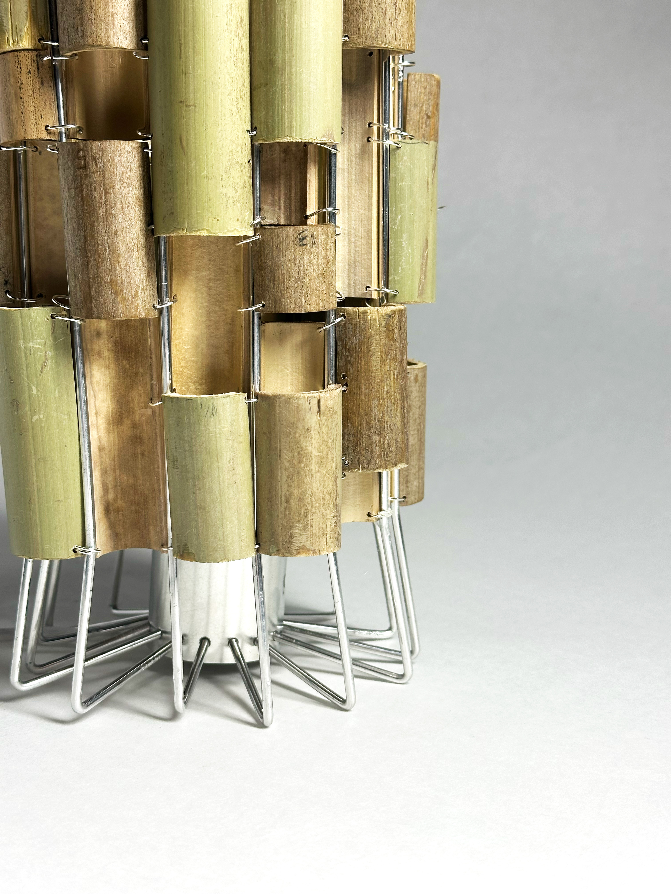
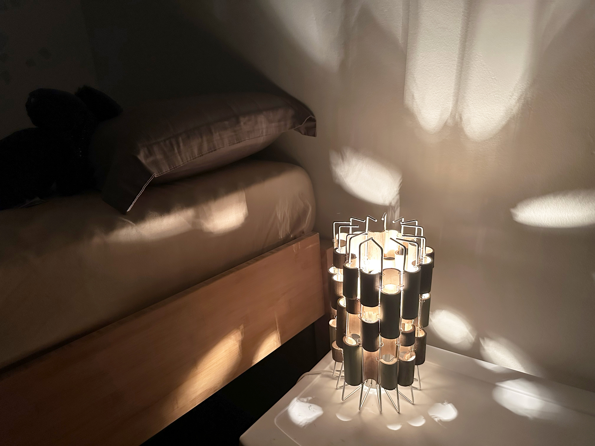

Bamboo Lamp
Spring 2025
Challenge:
Explore how material research can drive design while finding alternative ways to reuse unwanted natural materials for sustainability. Understand the physical properties, strengths, and limitations of reclaimed bamboo.
Design:
Conducted iterative experiments with bamboo sourced from Seven Arrows Farm in Providence, testing various forms, structures, and combinations. Insights from these hands-on explorations informed the creation of a final lamp that directly reflects the material's characteristics.
Outcome:
Produced a functional lamp that embodies the results of material-driven research, demonstrating how experimental making can translate deep material understanding into a tangible, sustainable, design-forward object.



Bamboo was processed into standardized units to test flexibility, strength, and modularity—laying the foundation for iterative exploration.
Iteration group 1

Early experiments explored forms, structure patterns, and connection methods.
Iteration group 2

Placement and shaping of bamboo elements interacted with light and shadow, producing compelling visual effects that informed the final design."

Placement and shaping of bamboo elements interacted with light and shadow, producing compelling visual effects that informed the final design.”



